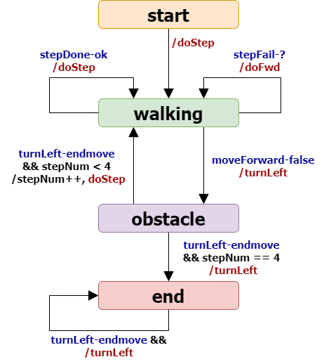

Introduction
Requirements
Requirement analysis
Problem analysis
Test plans
Project
To realize the
boundary logic we will create a new actor
BoundaryWalkerActor that incapsulates the
StepRobotActor to move the robot.
In addition to this, we can reuse the
FSM explained in
wssupportAsActorJava for the
BoundaryWalk problem (java class
BoundaryWalkerActor.java).
|
 |
BoundaryWalkerActor.kt:
the new FSM is very similar to the one used in Java. However:
- the fsm is activated with an input each time the handleInput receives ApplMessages from the main to start and also from the BasicStepRobotActor;
- the actions related to a state transition are performed when the specified input-message is received and the conditions are true;
- it's been added a new functionality that measure the length of the entire boundary.
|
Testing
Deployment
Maintenance